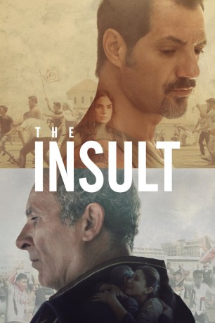

#9843 Der Affront
Alternativ: The Insult (Englischer Titel)
Auszeichnungen: für 1 Oscars nominiert
 
 IMDB-Wertung: 7.7 / 10
IMDB-Wertung: 7.7 / 10  Metascore: 72
Metascore: 72 
In today's Beirut, an insult blown out of proportions finds Toni, a Lebanese Christian, and Yasser, a Palestinian refugee, in court. From secret wounds to traumatic revelations, the media circus surrounding the case puts Lebanon through a social explosion, forcing Toni and Yasser to reconsider their lives and prejudices.
BDRIP MIC
Jahr: 2017
Dauer: 113 Minuten
FSK:
Land: Frankreich Studio: Alpenrepublik FilmverleihTonspuren:
Untertitel: Englisch,
Auflösung: 1080p (1920x808) Größe: 9000 MB
Genre: Thriller, Drama
Regisseur: Ziad Doueiri
Drehbuch: Ziad Doueiri, Joelle Touma
Soundtrack: Éric Neveux
Darsteller:
- Adel Karam als Tony Hanna
- Kamel El Basha als Yasser Abdallah Salameh
- Diamand Bou Abboud als Nadine Wehbe
- Rita Hayek als Shirine Hanna
- Christine Choueiri als Manal Salameh
- Karim Rahbani als Wajdi Wehbe's Assistant
- Camille Salameh als Wajdi Wehbe
- Talal Jurdi als Talal (General Manager)
- Julia Kassar als Judge Colette Mansour
- Rifaat Torbey als Samir Geagea
- Carlos Chahine als Judge Chahine
- Walid Abboud als Himself (Television Host)
- Georges Daoud als Georges Hanna
- Elie Njeim als Elie
- Sami Hamdan als Ibrahim Nassar
- Tony Mehanna als The President
- Abido Bacha als Salah Ayoub
- Nabil Koni als Mohamed Ghandour
- Mohamed A. Jaroudi als Judge 2
- Youssef Eid als Judge 3
- Fouad Yammine als Dr. Badran
- Razzouk Mardini als Dr. Khawam
- Ghassan Koteit als Dr. Tony
- Jad Ghanem als Nabil
- Hala Hatoum als Ibrahim Nassar's Assistant
- Majd Hitti als Police Officer
- Wassim el Tom als Police Officer
- Issam Said als Charbel
- Hasan Akil als Maroun
- Simon Jamous als Gang Elie
- Eddy-Joe Chamoun als Gang Elie
- Chahine Andraos als Radiologist
- Nadim Hobeika als Nadine's Assistant
- Reem Ali als Yasser's Assistant
- Wael Khachouk als Worker
- Abed El Rahman Khalil als Worker
- Jawad Nawfal als Worker
- Michel Aswad als Worker
- Anwar Ghosn als Worker
- Jessica Mansour als Wajdi Wehbe's Assistant
- Elyssa Skaff als Wajdi Wehbe's Assistant
- Haitham Sam Herzallah als Wajdi Wehbe's Assistant
- Samer Bou Antoun als Wajdi Wehbe's Assistant
- Wael Chedid als Wajdi Wehbe's Assistant
- Christina Farah als Wajdi Wehbe's Secretary
- Albert Ghattas als Tony's Client
- Ziad Jabra als Security Agent
- Ali Ossman als Militiaman
- Elias Aarab als Newspaper Seller
- Ralph Doumit als Journalist
Datei: X:\2017(A-F)\Affront, Der (2017, FSK, 1920x808).mkv seit 02.11.2018
Festplatte: HD 2017(A-Z)-2018(A-F)
 Es gibt insgesamt 152 Filme in der Gruppe '2017(A-F)'
Es gibt insgesamt 152 Filme in der Gruppe '2017(A-F)'